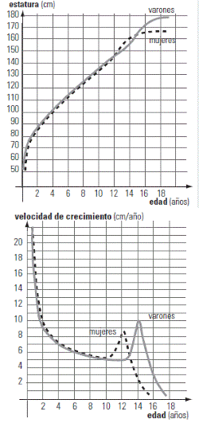

NO ME SALEN
PROBLEMAS RESUELTOS DE BIOFÍSICA DEL CBC
(Movimiento variado)
|
|

|
| |

|
|
22- Crecimiento. Los gráficos y textos adjuntos
han sido extraídos de un artículo de la revista Ciencia Hoy: La influencia ambiental en el crecimiento humano de L.M. Guimarey , F. R. Carne se, H. Pucciarelli.
|
| |
|
|
|  |
|
Analice detalladamente la información presentada
relacionando ambas curvas.
a) Describa cómo evoluciona la estatura con
la edad. ¿Lo hace siempre de la misma manera?
¿En qué etapas el crecimiento es más rápido?
Especifique y correlacione las caracteristicas
de los gráficos de altura y el de velocidad de
crecimiento (pendientes, concavidades, etc):
• en la etapa que va desde el nacimiento
hasta los 2-3 años.
• en la etapa preescolar y escolar temprana
• en la etapa de la pubertad
• en la adultez
b) Compare el crecimiento de varones con el
de las niñas. ¿En qué etapa se diferencian?
¿Cómo se diferencian?
c) ¿Qué interpretación tiene el área bajo la
curva del gráfico de velocidad de crecimiento
en función de la edad?
d) Complete los gráficos adjuntos de acuerdo
a lo que dice la National Library of Medicine:
“Las personas suelen perder alrededor de un
centímetro (0,4 pulgadas) cada 10 años después
de los 40 años. La pérdida de estatura es incluso
más rápida después de los 70 años. Usted puede
perder un total de 1 a 3 pulgadas de estatura a
medida que envejece.”
¿Qué signo tiene la velocidad de crecimiento
después de los 40 años? Justifique. |
|
|
|
| No puedo ayudarte mucho en ésta. La idea es que hagas paso a paso lo que te pide el enunciado... espero que no te aburras. Permitime que te haga una pregunta capciosa: ¿cuál es el móvil, o los móviles en estos gráficos? Jajajajaj!!! Si respondiste los chicos, o los varones y las mujeres, o los humanos... estas como un turco en la neblina. Acá no hay móviles porque los gráficos relacionan estatura con edad. Sin embargo como las unidades son coherentes con un móvil de la cinemática, podríamos buscar cuál es ese móvil correspondiente. Yo diría que es éste: la parte de arriba de la cabez que se aleja del piso cuando estamos parados y a medida que crecemos. Bueno, no te enojes. |
|
|
| |
|
|
PARA APRENDER MÁS:
- En casi todas las especies en la que hay dimorfismo, en las que los machos son más grandes que las hembras, en las que los machos compiten entre sí por monopolizar sexualmente hembras y formar harenes, la pubertad de los machos se retrasa respecto a la de las hembras.
|
|
 |
| |
| |
| |
|
| Algunos derechos reservados.
Se permite su reproducción citando la fuente. Última actualización mar-20. Buenos Aires, Argentina. |
|
|
| |
|
|
|